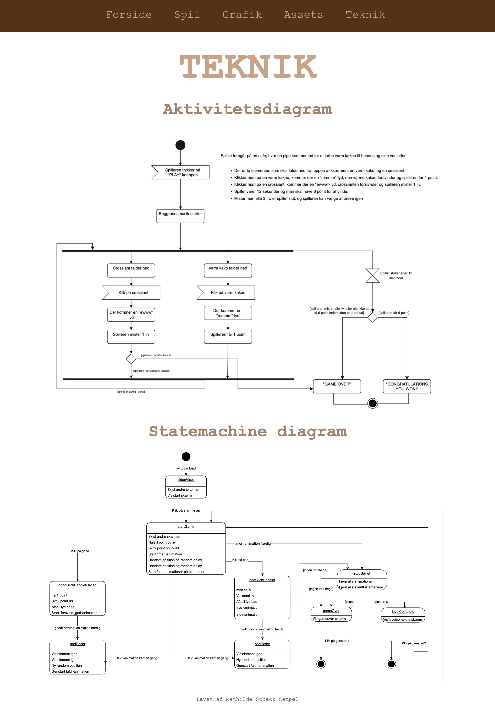

Tema 04 - Grundlæggende animation

I Tema 04 – Grundlæggende animation, skulle jeg kode mit eget spil helt fra bunden. Her blev jeg for første gang introduceret til JavaScript og Adobe Illustrator. Jeg startede processen med at brainstorme med masse ideer til mit spil-design, og fandt hurtigt uf af at jeg gerne ville tage inspiration fra stilarten, kawaii. Herefter begyndte jeg på mine skitser, og fik derefter udviklet en papir-prototype, som viste hvordan mit spil ville komme til at fungere/se ud. Jeg har selv tegnet alle mine spil – og Ui elementer i Illustrator. Dette var min første gang jeg skulle benytte mig af JavaScript, og jeg havde derfor rigtig svært ved det. Jeg brugte i dette forløb meget tid på at se forklarende YouTube-videoer, der kunne hjælpe mig med at få en forståelse for JavaScript.
Under dette forløb blev jeg også gjort opmærksom på vigtigheden af farver og nuancer, bl.a. i forhold til dybde på mine spil-baggrunde.
Skitser
Teknik
Færdigt spil